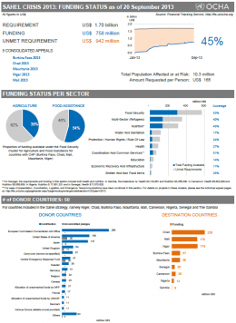

Interview: “Business as usual doesn’t cut it”

This morning (Thursday 26 September), senior representatives from more than 60 countries and international organizations will gather in the margins of the UN General Assembly for a High Level Meeting on the political, security and humanitarian future of the Sahel – one of the most vulnerable regions in the world. The meeting will be chaired by UN Secretary-General Ban Ki-Moon.
Speaking ahead of the event, the Humanitarian Coordinator for the Sahel, Robert Piper, says that it offers a chance for governments, the UN and the development and humanitarian communities to adopt a new approach to addressing vulnerability in the region.
“‘Business as usual’ doesn’t cut it. We’re going to have a very large caseload of people every year unless we change our approach,” he said.
Q. Thank you for your time. What is the situation in the Sahel today?
A. Well, the situation today is much better than last year. Last year we had a drought and we certainly had a crisis of fairly epic proportions. This year the situation remains fairly serious, People are still trying to recover from last year’s events and they’ve also been battered by man-made disasters: [the conflict in] northern Mali and so forth.
Today we have over 11 million people food insecure across the region. Almost 5 million children are acutely malnourished and we have had a number of epidemics and different health challenges. So it’s a region which is recovering from a very serious period, but [that is] still very fragile and in need of a tremendous amount of support from the international community.
Q. What kind of humanitarian assistance do people need?
A. I think we need to realize firstly that we have amongst these populations the most vulnerable people on the planet. So ‘business as usual’ doesn’t cut it. We’re going to have a very large caseload of people every year unless we change our approach.
One of the problems we have today – as we’ve had almost every year with humanitarian efforts – is that governments tend to want to fund food and nutrition which gives a very immediate life-saving result. They are much more reluctant to fund, say, agriculture or water and sanitation inputs because that has a deferred result.
So the problem is the following: If we’re going to reduce next year’s caseload of food insecure people, then we need to give them agricultural support this season. And if we’re going to reduce the number of malnourished children that we’re going to treat next year, then water and sanitation services have got everything to do with [that]. So we need a more balanced response.
Q. What will be the focus of the High-Level Event for the Sahel?
A. The meeting is dedicated to bringing the international community together in a coordinated fashion. The objective of the Secretary-General is to create a stronger international response to make sure that [everyone] comes together on the new UN integrated strategy for the Sahel which was endorsed by the Security Council a couple of months ago.
The strategy brings together essentially three pillars of work of the international community in the Sahel: Supporting and strengthening states across the region; security and borders, and resilience – trying to break the cycle of crises that are creating more and more vulnerable people in the region.
Q. What are your expectations for the meeting? What do you want to see?
A. Our expectations are pretty high for this. This is a very fragile region. We can’t afford to let it slide another year. Across the region we see fragility. We see fragility caused by nature and climate change. We see the fragility that comes with the most intense poverty on the planet. And we see fragility that comes from man-made crises -conflicts between people over resources, conflicts championed by Jihadists in northern Mali, and refugees being pushed out of Sudan and Central African Republic into Chad. So there’s fragility wherever you look.
To respond effectively to that kind of scenario, we need regional governments working together very effectively, and we need an international community in turn which comes in behind that regional community of actors and dedicates themselves to dealing with the structural problems that are unfolding in the region.
My expectation is that at the end of the day we [need to be] sure that we are focusing on the most vulnerable people in this region. If we don’t have [them] at the centre of all our policy making efforts and our funding, then we’re not going to build the kind of resilience that we have to see in this part of the world.
Watch the High Level event live on UN TV from 10AM New York time.